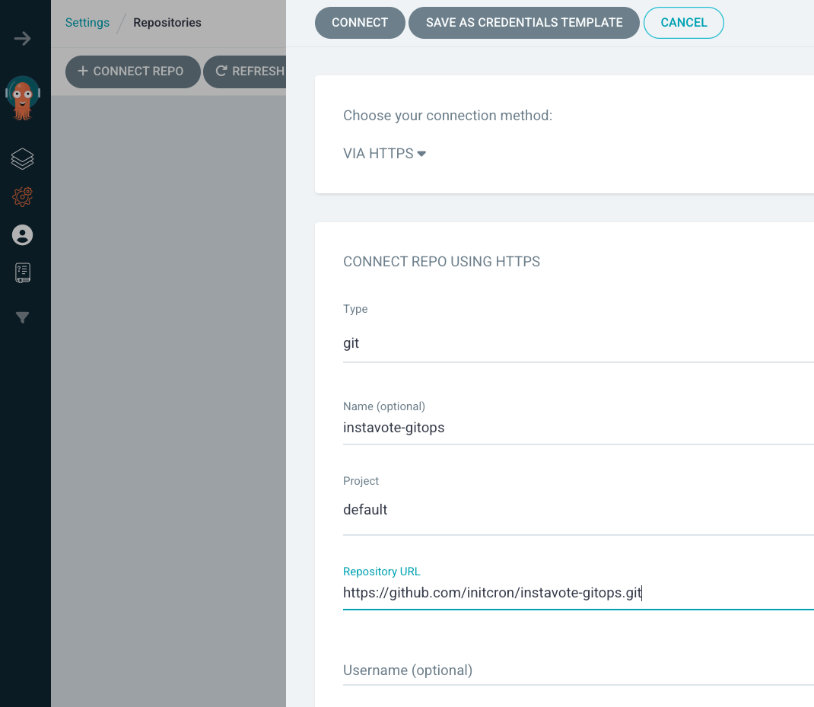
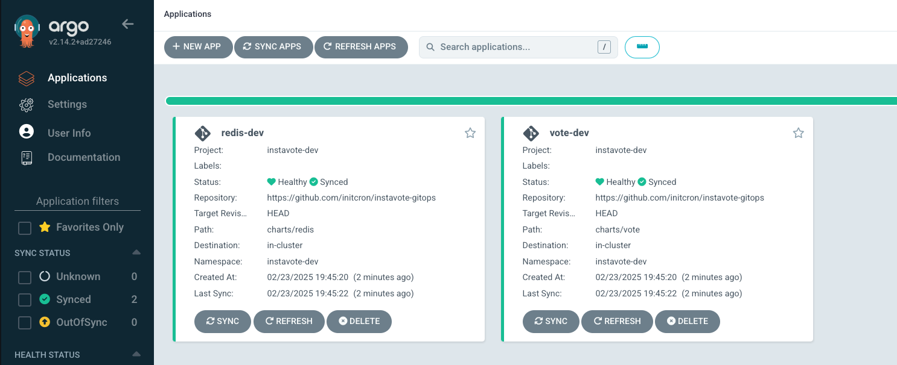
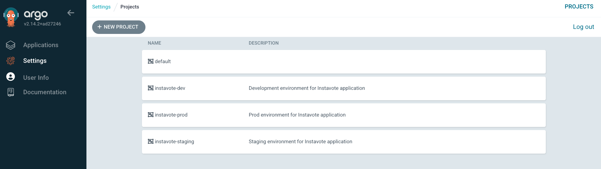
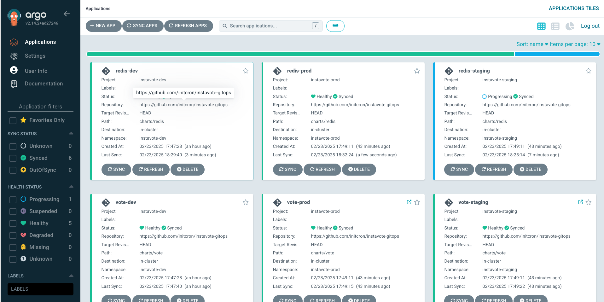

Building Multi-Tenant Deployment System
Overview
This lab guide walks you through setting up a multi-tenant, multi-environment deployment system using Argo CD and related tools. We'll start with a simple deployment to the dev environment and then expand to a full multi-environment setup.
Tools Used
- Argo CD
- ApplicationSets
- GitHub
- Helm
- Argo AppProjects
Prerequisites
- Kubernetes cluster with Argo CD installed
- kubectl configured with admin access
- Git client
- GitHub account
Repository Structure
Three repositories are used in this setup:
+--------------------+ +--------------------+ +--------------------+
| | | | | |
| APPLICATION CODE | | GITOPS CODE | | PLATFORM CODE |
| REPOSITORY | | REPOSITORY | | REPOSITORY |
| | | | | |
+--------------------+ +--------------------+ +--------------------+
| | | | | |
| Purpose: | | Purpose: | | Purpose: |
| - Source code | | - K8s manifests | | - Cluster config |
| - Build configs | | - Kustomizations | | - Platform tools |
| - Tests | | - Helm charts | | - CI/CD pipelines |
| - Dockerfiles | | | | - Infra as code |
| - App dependencies | | - Environment vars | | - Monitoring setup |
| - Business logic | | - Argo Rollouts | | - Security configs |
| | | - Release configs | | - Shared services |
| | | | | |
+--------------------+ +--------------------+ +--------------------+
| | |
v v v
+--------------------+ +--------------------+ +--------------------+
| CI builds images | | Defines how apps | | Provisions and |
| and pushes to |----->| are deployed and |<-----| maintains the |
| container registry | | promoted between | | platform itself |
+--------------------+ | environments | +--------------------+
+--------------------+
#Platform Repo Structure
# Source : https://github.com/sfd226/instavote-platform-config
instavote-platform-config/
├── tenants/
│ ├── dev/
│ │ ├── project.yaml # ArgoCD project definition
│ │ ├── resource-quota.yaml # Resource limits
│ │ └── network-policies.yaml # Network policies
│ ├── staging/
│ │ └── [similar structure as dev]
│ └── prod/
│ └── [similar structure as dev]
├── rbac/
│ ├── groups/
│ │ ├── platform-admins.yaml
│ │ ├── dev-team.yaml
│ │ └── ops-team.yaml
│ └── roles/
│ ├── tenant-admin.yaml
│ └── tenant-viewer.yaml
└── applicationsets/
└── instavote-apps.yaml # Application deployment patterns
# Tenant Repo Structure
# Source : https://github.com/sfd226/instavote-gitops
instavote-gitops/
├── charts/
│ ├── vote/ # Vote frontend service
│ │ ├── Chart.yaml
│ │ ├── values.yaml
│ │ ├── templates/
│ │ │ ├── rollout.yaml # Argo Rollouts configuration
│ │ │ ├── service.yaml # Main service
│ │ │ └── preview-service.yaml # Preview service for blue/green
│ │ └── env/
│ │ ├── dev.yaml # Dev environment values
│ │ ├── staging.yaml # Staging environment values
│ │ └── prod.yaml # Production environment values
│ └── redis/ # Redis service
│ ├── Chart.yaml
│ ├── values.yaml
│ ├── templates/
│ │ ├── deployment.yaml
│ │ └── service.yaml
│ └── env/
│ ├── dev.yaml
│ ├── staging.yaml
│ └── prod.yaml
└── docs/ # Additional documentation
└── architecture.md # Architecture documentation
#Application Repo Structure
# Source : https://github.com/sfd226/vote
.
├── Dockerfile
├── Jenkinsfile
├── README.md
├── app.py
├── requirements.txt
├── static
│ └── stylesheets
│ └── style.css
└── templates
└── index.html
Lab Steps
Phase 1: Development Environment Setup
1. Repository Setup
Fork the repositories:
* Platform Repo : https://github.com/sfd226/instavote-platform-config
* GitOps Repo : https://github.com/sfd226/instavote-gitops
Clone your forked repositories:
git clone https://github.com/YOUR_USERNAME/instavote-gitops
git clone https://github.com/YOUR_USERNAME/instavote-platform-config
2. Register Repository in Argo CD:
- Navigate to Settings → Repositories in Argo CD UI
- Click "Connect Repo"
- Add repository URL and leave other fields as default 
- Click "Connect"
- Verify repository shows "Successful" connection status
3. Create ArgoCD Project for Dev Environment:
# Switch to Platform Repo
cd instavote-platform-config
# Apply the project definition
kubectl apply -f tenants/dev/project.yaml
# Verify project creation
kubectl get appprojects -n argocd
4. Create Initial ApplicationSet for Dev:
# applicationset/instavote-dev.yaml
apiVersion: argoproj.io/v1alpha1
kind: ApplicationSet
metadata:
name: instavote-dev
namespace: argocd
spec:
generators:
- git:
repoURL: https://github.com/YOUR_USERNAME/instavote-gitops
revision: HEAD
directories:
- path: "charts/*"
template:
metadata:
name: '{{path.basename}}-dev'
annotations:
debug.path: '{{path}}'
debug.path.basename: '{{path.basename}}'
spec:
project: instavote-dev
source:
repoURL: https://github.com/YOUR_USERNAME/instavote-gitops
targetRevision: HEAD
path: '{{path}}'
helm:
valueFiles:
- env/dev.yaml
destination:
server: https://kubernetes.default.svc
namespace: 'instavote-dev'
syncPolicy:
automated:
prune: true
selfHeal: true
syncOptions:
- CreateNamespace=true
Note : Replace YOUR_USERNAME with the actual GitHub User/Org Name
5. Apply and Verify Dev Environment:
# Validate ApplicationSet
kubectl apply -f applicationset/instavote-dev.yaml --dry-run=client
# Apply ApplicationSet
kubectl apply -f applicationset/instavote-dev.yaml
# Check status
kubectl get applicationset instavote-dev -n argocd
kubectl get applications -n argocd
# Check generated resources
kubectl get all -n instavote-dev
You should see two Applications(auto deploy configs) created from ArgoCD Web at this time 
Phase 2: Multi-Environment Setup
1. Create Projects for All Environments:
# Switch to Platform Repo
cd instavote-platform-config
# Apply all project definitions
kubectl apply -f tenants/dev/project.yaml
kubectl apply -f tenants/staging/project.yaml
kubectl apply -f tenants/prod/project.yaml
# Verify
kubectl get appprojects -n argocd

2. Create Matrix-based ApplicationSet:
# applicationset/instavote-apps.yaml
apiVersion: argoproj.io/v1alpha1
kind: ApplicationSet
metadata:
name: instavote
namespace: argocd
spec:
generators:
- matrix:
generators:
- git:
repoURL: https://github.com/YOUR_USERNAME/instavote-gitops
revision: HEAD
directories:
- path: "charts/*"
- list:
elements:
- environment: dev
namespace: instavote-dev
- environment: staging
namespace: instavote-staging
- environment: prod
namespace: instavote-prod
template:
metadata:
name: '{{path.basename}}-{{environment}}'
annotations:
debug.path: '{{path}}'
spec:
project: instavote-{{environment}}
source:
repoURL: https://github.com/YOUR_USERNAME/instavote-gitops
targetRevision: HEAD
path: '{{path}}'
helm:
valueFiles:
- env/{{environment}}.yaml
destination:
server: https://kubernetes.default.svc
namespace: '{{namespace}}'
syncPolicy:
automated:
prune: true
selfHeal: true
syncOptions:
- CreateNamespace=true
Note : Replace YOUR_USERNAME with the actual GitHub User/Org Name
3. Clean Up Dev-only ApplicationSet:
# Remove the dev-only ApplicationSet
kubectl delete applicationset instavote-dev -n argocd
4. Apply Matrix ApplicationSet:
# Validate first
kubectl apply -f applicationset/instavote-apps.yaml --dry-run=client
# Apply if validation succeeds
kubectl apply -f applicationset/instavote-apps.yaml
5. Verify Multi-Environment Deployment:
# Check ApplicationSet status
kubectl get applicationset instavote -n argocd
kubectl describe applicationset instavote -n argocd
[Expected Sample Status for describe applicationset command ]
Status:
Conditions:
Last Transition Time: 2025-02-23T14:19:55Z
Message: Successfully generated parameters for all Applications
Reason: ApplicationSetUpToDate
Status: False
Type: ErrorOccurred
Last Transition Time: 2025-02-23T14:19:55Z
Message: Successfully generated parameters for all Applications
Reason: ParametersGenerated
Status: True
Type: ParametersGenerated
Last Transition Time: 2025-02-23T14:19:55Z
Message: ApplicationSet up to date
Reason: ApplicationSetUpToDate
Status: True
Type: ResourcesUpToDate
Resources:
Group: argoproj.io
Health:
Kind: Application
Name: redis-dev
Namespace: argocd
Version: v1alpha1
Group: argoproj.io
Health:
Kind: Application
Name: redis-prod
Namespace: argocd
Version: v1alpha1
Group: argoproj.io
Health:
Kind: Application
Name: redis-staging
Namespace: argocd
Version: v1alpha1
Group: argoproj.io
Health:
Kind: Application
Name: vote-dev
Namespace: argocd
Version: v1alpha1
Group: argoproj.io
Health:
Kind: Application
Name: vote-prod
Namespace: argocd
Version: v1alpha1
Group: argoproj.io
Health:
Kind: Application
Name: vote-staging
Namespace: argocd
Version: v1alpha1
Events:
Type Reason Age From Message
---- ------ ---- ---- -------
Normal created 7s applicationset-controller created Application "redis-dev"
Normal created 7s applicationset-controller created Application "redis-staging"
Normal created 7s applicationset-controller created Application "redis-prod"
Normal created 7s applicationset-controller created Application "vote-dev"
Normal created 7s applicationset-controller created Application "vote-staging"
Normal created 7s applicationset-controller created Application "vote-prod"
Further validation
# List all applications
kubectl get applications -n argocd
# Check resources in each namespace
kubectl get all -n instavote-dev
kubectl get all -n instavote-staging
kubectl get all -n instavote-prod
You should also be able to see a beautiful matrix of all the applications created on the ArgoCD . 
Troubleshooting
If you encounter issues:
- Check ApplicationSet Controller Logs:
kubectl logs -n argocd -l app.kubernetes.io/name=argocd-applicationset-controller -f
[Expected Sample Output]
time="2025-02-23T14:19:55Z" level=info msg="created Application" app=argocd/vote-staging applicationset=argocd/instavote
time="2025-02-23T14:19:55Z" level=info msg="created Application" app=argocd/vote-prod applicationset=argocd/instavote
time="2025-02-23T14:19:55Z" level=info msg="end reconcile in 152.613578ms" applicationset=argocd/instavote requeueAfter=3m0s
time="2025-02-23T14:19:55Z" level=info msg="applications result from the repo service" allPaths="[charts charts/redis charts/redis/env charts/redis/templates charts/redis/templates/tests charts/vote charts/vote/env charts/vote/templates]" pathParamPrefix= repoURL="https://github.com/initcron/instavote-gitops" revision=HEAD total=8
time="2025-02-23T14:19:55Z" level=info msg="generated 6 applications" applicationset=argocd/instavote
time="2025-02-23T14:19:55Z" level=info msg="end reconcile in 190.512675ms" applicationset=argocd/instavote requeueAfter=3m0s
time="2025-02-23T14:19:55Z" level=info msg="applications result from the repo service" allPaths="[charts charts/redis charts/redis/env charts/redis/templates charts/redis/templates/tests charts/vote charts/vote/env charts/vote/templates]" pathParamPrefix= repoURL="https://github.com/initcron/instavote-gitops" revision=HEAD total=8
time="2025-02-23T14:19:55Z" level=info msg="generated 6 applications" applicationset=argocd/instavote
time="2025-02-23T14:19:55Z" level=info msg="end reconcile in 99.411667ms" applicationset=argocd/instavote requeueAfter=3m0s
time="2025-02-23T14:20:09Z" level=info msg="Alloc=10928 TotalAlloc=108116 Sys=30805 NumGC=262 Goroutines=97"
- Check Application Status:
kubectl get applications -n argocd
kubectl describe application vote-dev -n argocd
- Common issues and solutions:
- Repository not found: Verify repository registration in Argo CD UI
- Sync failed: Check application events and logs
- Resources not created: Check namespace status and RBAC permissions
Next Steps
After completing the basic setup you could possibly try this: 1. Implement network policies 2. Add resource quotas 3. Set up monitoring 4. Configure CI pipeline integration